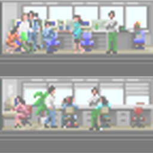

「タワー」がマッキントッシュ用のゲームとして始めて発表されたのは1994年の7月のことでした。
それからというもの、この「タワー」は多くのプラットフォームに移植され、世界で愛されるゲームになりました。
「タワー」はシュミレーションゲームです。物語を持ったゲームと異なり、シナリオやストーリー、ゲームエンド、といったものは事前には用意されていません。皆さんが思い思いに作った建造物の中で住人たちがいとなむ日々の生活、それそのものがストーリーになってくるのです。
今から3年半前、私たちが「ザ・タワーⅡ」を企画する際に考えたのは、ゲームにあたらしいストーリーを付加するのではなく、"あたらしいストーリーがおこりうる環境"を作ることでした。
ずいぶん長い時間お待たせすることになりましたが、今回おとどけすることができた「ザ・タワーⅡ」では、プラグインという構造を取り入れることで、それを実現することができました。
「それじゃあ、何が変わったんだ？」
その答えは登場するすべての住人やアイテムの"ひろがり"です。お気づきの方も多いと思いますが、「タワー」の主人公は"建物"ではありません。"人の生活"です。人が営む生活そのものが、このゲームの物語なのです。マップごとに登場する住人たち、彼らで賑わうお店、映画館で上映される映画・・・、登場するすべてのアイテムの個性がマップごとにどんどんと広がるのです。
ゲームのシステムを複雑にするのではなく、タワー本来の魅力を最大限に引き出すにはどうしたらいいか？、初めてプレイする人も自然に楽しめるようにするにはどうしたらいいか？、ひたすらそう考えて作られたのがこの「ザ・タワーⅡ」なのです。
最後に、「ザ・タワーⅡ」では、皆さんに作っていただく建物を「ビル」ではなく「建造物」と呼ぶことにしました。この理由は単純で、これからTowerkitと呼ばれるプラグインで発展するであろうタワー・ワールドすべてを「ビル」という言葉でくくってしまう（※）のは、ちょっと不都合があるからです。最初はピンと来ないかもしれませんが、「ザ・タワーⅡ」はこれから広がる世界へのほんの小さな入り口なのです・・。
それではどうぞ、皆さん、どうぞゲームを起動してみてください。
皆さんを新しい建造物の最高責任者として歓迎いたします。
新しいタワー・ワールドへようこそ。
1998年6月
ザ・タワーⅡ開発チーム一同
